Isomeric Sulphites
Description
This section is from the book "Modern Chemistry", by William Ramsay. Also available from Amazon: Modern Chemistry: Theoretical and Modern Chemistry (Volume 2).
Isomeric Sulphites
The evidence is this:-Sulphur alcohol or ethyl-hydrosulphide (also termed " mer-captan"), when oxidised by boiling with dilute nitric acid, is converted into ethyl-sulphonic acid, thus:
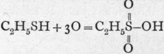 , a monobasic acid, of which the ethyl salt is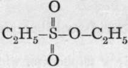. Now sodium sulphite, warmed with ethyl iodide, yields an isomeric compound of the formula 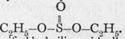 This is known, because when saponified by boiling with alkali, it is converted into alcohol and a sulphite, thus: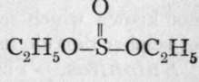
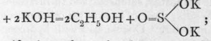 whereas the saponification of ethyl sulphonate yields potassium ethylsulphonate and alcohol, thus: 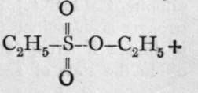
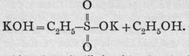 And, moreover, this acid, when distilled with phosphoric chloride, yields an acid chloride,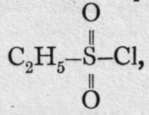which can be reduced with nascent hydrogen to ethyl hydrosulphide, the substance from which the acid was originally obtained by oxidation. It is therefore concluded that the carbon is directly united to the sulphur atom in this case, while in ethyl sulphite the carbon of the ethyl group is united through oxygen. It follows that sulphurous acid must have the formula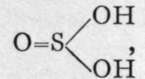 whereas sulphonic acid should be represented by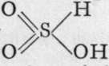
The silver salt is a sulphonate, while the potassium salt is a sulphite. This peculiarity is not shown by selenium or tellurium. It appears certain that thev are represented by the formulae 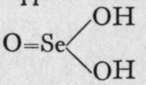 and 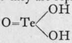; but it is not known which formula is to be ascribed to a solution of sulphur dioxide in water. Sulphites.-The sulphites, selenites, and tellurites of the alkalies are soluble salts; those of most of the other metals are sparingly soluble in water. Double salts with hydrogen (" acid salts ") are, however, soluble, e.g. calcium hydrogen sulphite, Ca(HSOg)2; and they are all decomposed by the stronger acids, sulphurous acid being liberated, if the solution is dilute; if strong, sulphur dioxide, its anhydride, comes off in the state of gas. Similarly, selenious and tellurous acids are liberated on addition of a strong acid to a solution of a selenite or tellurite. Pyrosulphites, similar in kind to pyrophosphates, such as 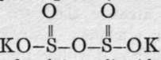, crystallise out on passing a current of sulphur dioxide through a solution of the carbonate of the alkali.
Sulphurous acid is a reducing agent, depriving reducible compounds of their oxygen; it itself is oxidised to sulphuric acid by the process. Owing to this property, it is used to bleach woollen goods; this it does by converting the insoluble colouring matter into a soluble colourless compound, which can be removed by washing. It is also an antiseptic ; and sulphites are added to liquors undergoing fermentation, when it is desired to check the action of the ferment.
Selenious and tellurous acids, treated in boiling solution with sulphurous acid, deposit selenium or tellurium, thus : H2SeO3.Aq + 2H2SO3.Aq = Se + 2H2SO4.Aq + H2O ; and with sulphuretted hydrogen, sulphurous acid gives a precipitate of sulphur: H2SO3.Aq + 2H2S.Aq = 3S + 2H2O.Aq. This brings to mind the mutual action of hydrochloric and hypochlorous acids, and of hydriodic and iodic acids, where the elements are also liberated.
Continue to:
- prev: Oxides Of Sulphur, Selenium, And Tellurium. The Corresponding Acids
- Table of Contents
- next: Acid Chlorides